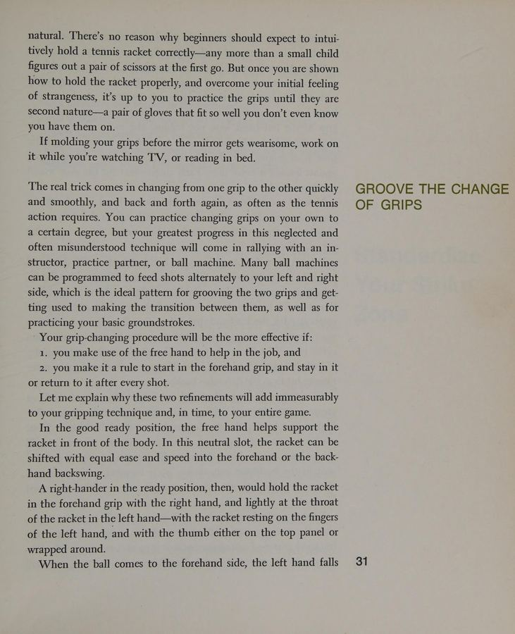

1. Cuộc Cách Mạng "Percentage Tennis" Của Jack Kramer
Jack Kramer là một trong những tượng đài vĩ đại nhất của lịch sử quần vợt thế giới – nhà vô địch Wimbledon, US Open, Davis Cup và là người khai sinh ra kỷ nguyên quần vợt chuyên nghiệp hiện đại. Tuy nhiên, di sản lớn nhất mà Jack Kramer để lại cho các thế hệ tay vợt chính là triết lý thi đấu mang tên "Percentage Tennis" (Quần vợt theo tỷ lệ phần trăm).
Người có ảnh hưởng lớn nhất đến sự nghiệp của Kramer là huấn luyện viên Cliff Roche – một kỹ sư công nghiệp xuất chúng. Chính "Coach" Roche đã dạy Kramer phân tích môn thể thao này dưới lăng kính của xác suất thống kê và hình học cơ học. Thay vì cố gắng tạo ra những cú đánh phép màu có tỷ lệ thành công 1/10, người chiến thắng bền vững là người kiên trì tung ra những cú đánh có xác suất thành công 9/10, ép đối thủ phải tự mắc sai lầm trước áp lực liên hồi.
2. Tám Sai Lầm Kinh Điển Khiến Người Chơi Nghiệp Dư Luôn Thất Bại
Theo quan sát của Jack Kramer tại các câu lạc bộ quần vợt phong trào, những thất bại cay đắng hầu như luôn bắt nguồn từ 8 lỗi cơ bản:
- Cách cầm vợt sai lệch (Faulty grips): Cầm vợt không khít hoặc trượt cán khi tiếp xúc bóng.
- Hỏng hóc cơ học trong chu kỳ vung vợt: Vung vợt giật cục, mở mặt vợt quá sớm hoặc rút ngắn đà kết thúc.
- Chọn lối chơi không phù hợp với thể hình và tâm lý: Cố gắng bắt chước phong cách hoa mỹ của các ngôi sao trong khi thể lực và cảm giác bóng chưa cho phép.
- Cố đánh cú đánh quá hiểm từ vị trí quá sâu: Đứng cách vạch cuối sân 3 mét nhưng lại cố đánh bóng cắm sát mép lưới hoặc sát mép cọc biên.
- Đánh bóng quá sức (Overhitting): Luôn dồn 100% lực cơ bắp vào mọi đường bóng thay vì duy trì độ sâu ổn định ở mức 75% lực.
- Chọn sai cú đánh ở các điểm then chốt: Cố gắng bỏ nhỏ (drop shot) mạo hiểm ở điểm Break point.
- Tự sáng tạo ra cú đánh lạ lẫm: Thay vì trung thành với các cú đánh cơ bản đã được kiểm chứng qua thời gian.
- Thiếu khả năng thích nghi với điều kiện sân bãi và gió: Không điều chỉnh lực đánh khi ngược gió hoặc khi mặt sân trơn trượt.

Hình 1.2: Chuẩn hóa vùng đón bóng (Standardize Your Strike Zone): Luôn di chuyển đôi chân để đón bóng ở khoảng cách lý tưởng ngang thắt lưng.3. Chuẩn Hóa Vùng Đón Bóng (Standardize Your Strike Zone)
Một tay vợt vĩ đại luôn đánh quả bóng ở cùng một độ cao lý tưởng: ngang giữa thắt lưng và đầu gối. Nếu bóng bay tới quá cao, họ lùi lại một bước; nếu bóng rơi quá ngắn, họ bước tiến lên phía trước một bước. Bằng cách di chuyển đôi chân chủ động, họ luôn đưa quả bóng vào "Vùng đón bóng chuẩn hóa" (Strike Zone), biến mọi đường bóng phức tạp thành một cú đánh quen thuộc.
Hãy cầm cây vợt vừa khít như một chiếc găng tay da quen thuộc. Bạn không bao giờ được phép đổ lỗi cho cây vợt; cây vợt chỉ là công cụ phản chiếu sự thăng bằng của cơ thể và sự sáng suốt của tư duy bạn.